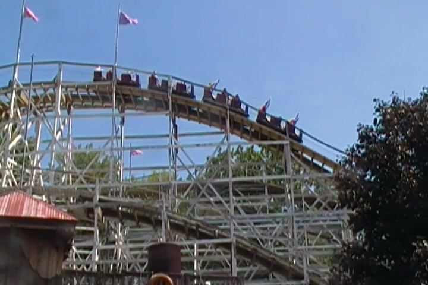
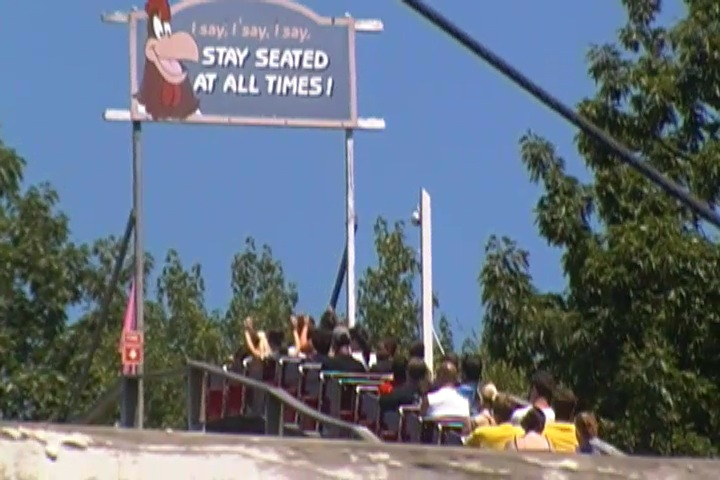
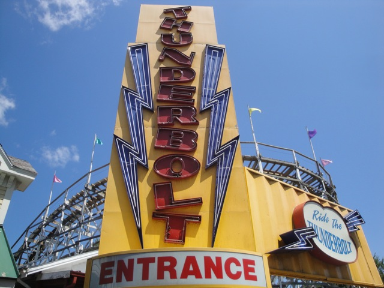

| |
Thunderbolt Review

We're here at Six Flags New England and todays ride we'll be reviewing is Thunderbolt. Now this is one of the older coasters at Six Flags New England and the only one that goes all the way back to the parks Riverside Park days, going all the way back to 1940. So yeah. We've got quite an oldie on our hands. We get in, pull down the lap bars, and we're off. We roll around a turn and head up the lifthill. It's not a very big or exciting lifthill. We get a decent view of Thunderbolt itself, but honestly, that's about it. We reach the top, Foghorn tells us to sit down, and we roll around the turn straight for the first drop. Hands up everyone!! Here we go!!! Wee!!! We roll down the first drop, through some straight track, and up a hill. There's no airtime here, but its still fun. The turnaround up here has some laterals, so that's fun. We then see something that is not expected on this ride. A double down. Yes, this ride does indeed have a double down. Now sadly, its not nearly as strong as some of the other rides with double downs. This isn't crazy ejector airtime or anything like that. But there is a nice pop of airtime right here. So that's still good. So don't worry. Your ass does leave the seat on the ride, its just not "WOW!!!" worthy or anything. We rise up another small hill. There's a small pop of airtime here, but nothing special. And again with the laterals. It's fun, but nothing special. We roll down another drop before rising up another small hill. Wee. It's fun, but sadly, there's no airtime or anything like that. We go down a slight dip and head back up into another turnaround in the structure. I always like these parts of the ride. Something about the turns under the structure is just relaxing to me. But whatever. We drop out and head up into another small hill. And this time, its got a nice little pop of airtime. Wee. We then rise up another small hill and into another turnaround. But sadly, there's not much laterals in this turnaround. As a matter of fact, it's slowing us down. Yeah, we're heading straight into the brake run. And that's Thunderbolt. While its certainly not a favorite of mine, its a fun little ride. Generic, but fun. I know I called this ride the most average coaster of all time, and to a certain extent, I still stand by that. This seems like the kind of coaster that would pop up as a pre-designed coaster in RCT. So if you're looking for a generic, but fun standard roller coaster, then Thunderbolt is your ride.
6/10
Location: Six Flags New England
Opened at Fantasy Forest at the Flushing Meadows Carousel in 1939
Relocated to Six Flags New England in 1941
Built by: Harry Baker
Last Ridden: July 30, 2011
Thunderbolt Photos


Home
|